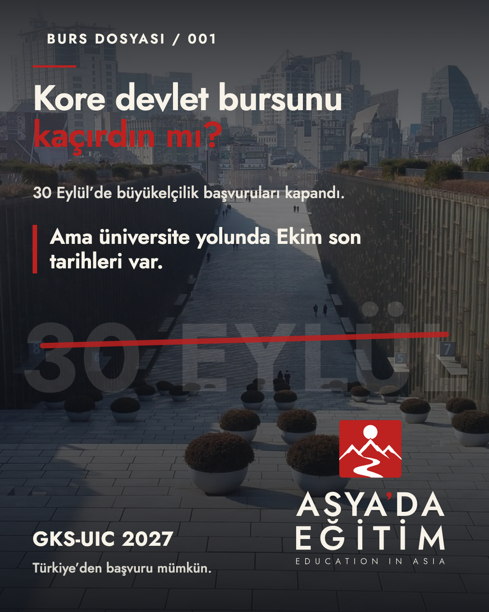
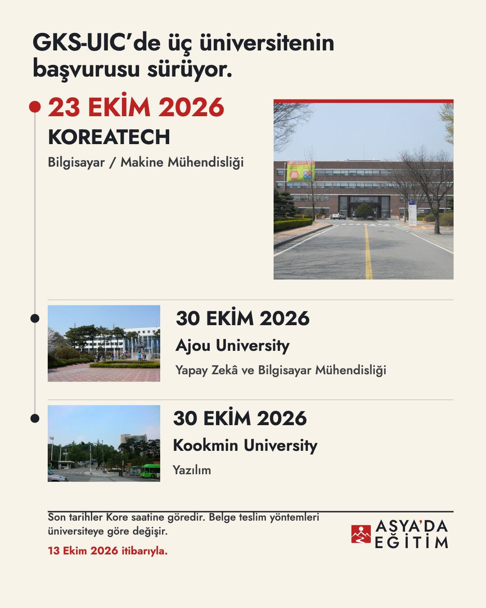
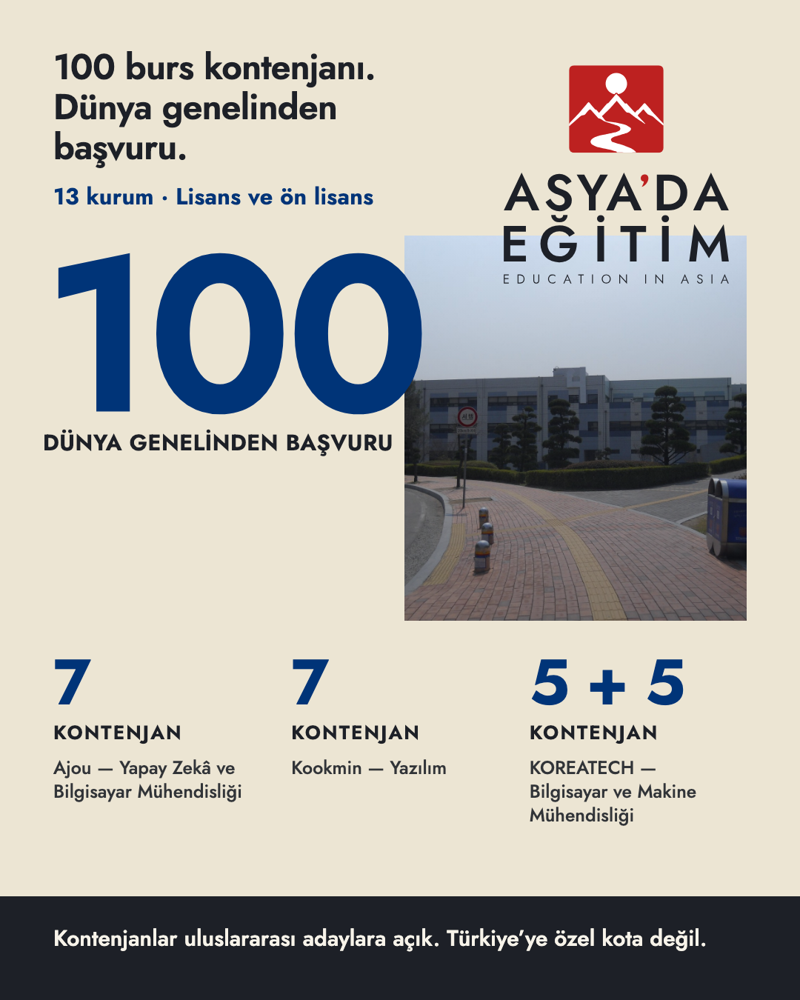
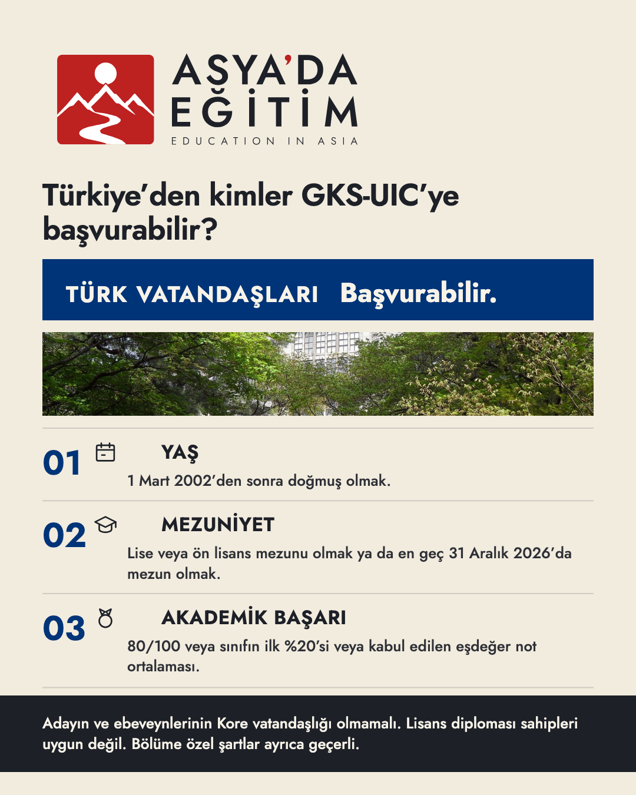
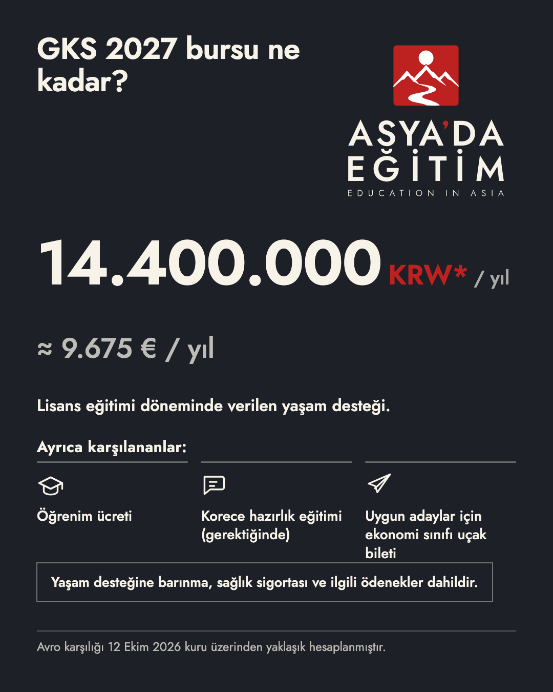
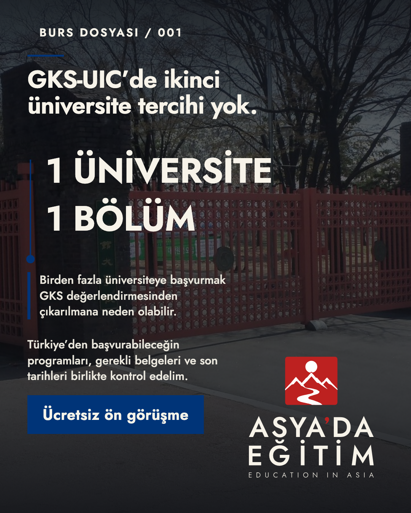

01 · Burs dosyası / 001 — kampüs görseliyle açılış
1080 × 1350 PNG · editable HTML/CSS/SVG · 375px önizleme
ASYA’DA EĞİTİM · INSTAGRAM KAMPANYASI · İNCELEME
Altı slaytlık 1080 × 1350 carousel: GKS-UIC üniversite tercihiyle 2027 için Kore devlet bursu. Kopya kilitli; tipografi Jost; logo onaylı kanonik SVG kilitlenmiş varyantlar.
Zamana duyarlı içerik: metinler 13 Ekim 2026 bilgi tarihine dayanır. Büyükelçilik başvuruları 30 Eylül 2026’da kapandı; üniversite tarihleri 23 ve 30 Ekim 2026 (Kore saati). Bu tarihlerden sonra canlı bir fırsat olarak sunulmamalıdır. Sosyal medyada yayınlanmadı.






1080 × 1350 PNG · editable HTML/CSS/SVG · 375px önizleme
1080 × 1350 PNG · editable HTML/CSS/SVG · 375px önizleme
1080 × 1350 PNG · editable HTML/CSS/SVG · 375px önizleme
1080 × 1350 PNG · editable HTML/CSS/SVG · 375px önizleme
1080 × 1350 PNG · editable HTML/CSS/SVG · 375px önizleme
1080 × 1350 PNG · editable HTML/CSS/SVG · 375px önizleme
manifest.json · copy-manifest.json · geometry QA raporu
kontak sayfası · mobil şerit · Instagram akış önizleme
doğrulama notları · fotoğraf lisansları · üretim talimatları
| Biçim | 1080 × 1350 PNG, 4:5, sRGB |
|---|---|
| Tipografi | Jost (değişken, gerçek metrikler) |
| Logo | P-01/light · P-01/dark · H-02/light (kanonik, değiştirilmemiş) |
| Görseller | Wikimedia Commons gerçek kampüs fotoğrafları; AI görsel üretimi yok |
| Kopya doğrulama | PASS (DOM ölçümü) |
| Geometri QA | PASS (çakışma/kırpma/güvenli alan) |
| Durum | İnsan yaratıcı onayı bekliyor |